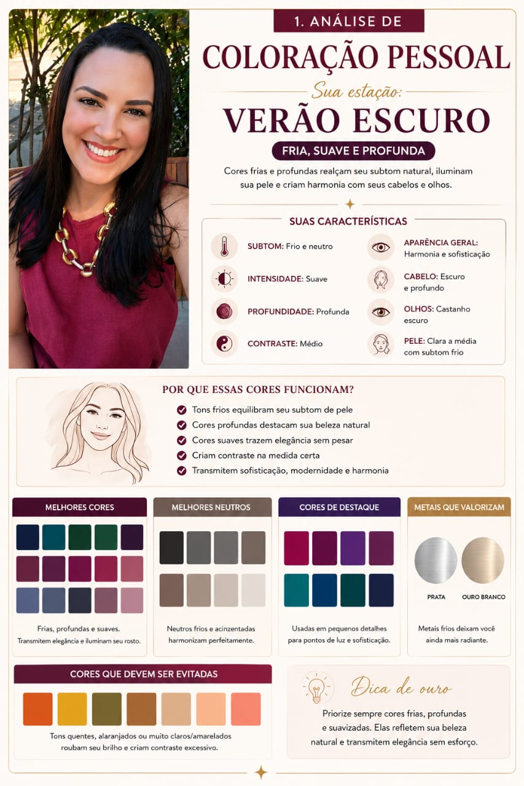
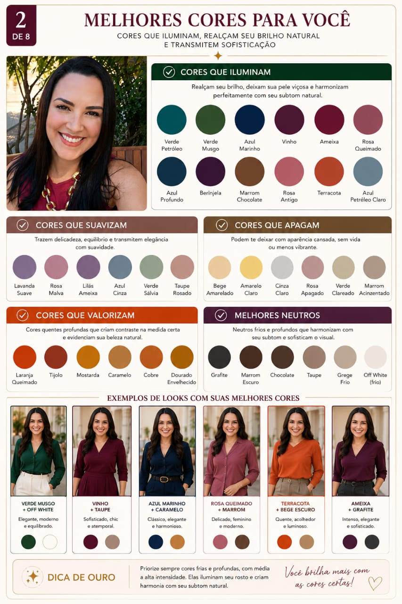
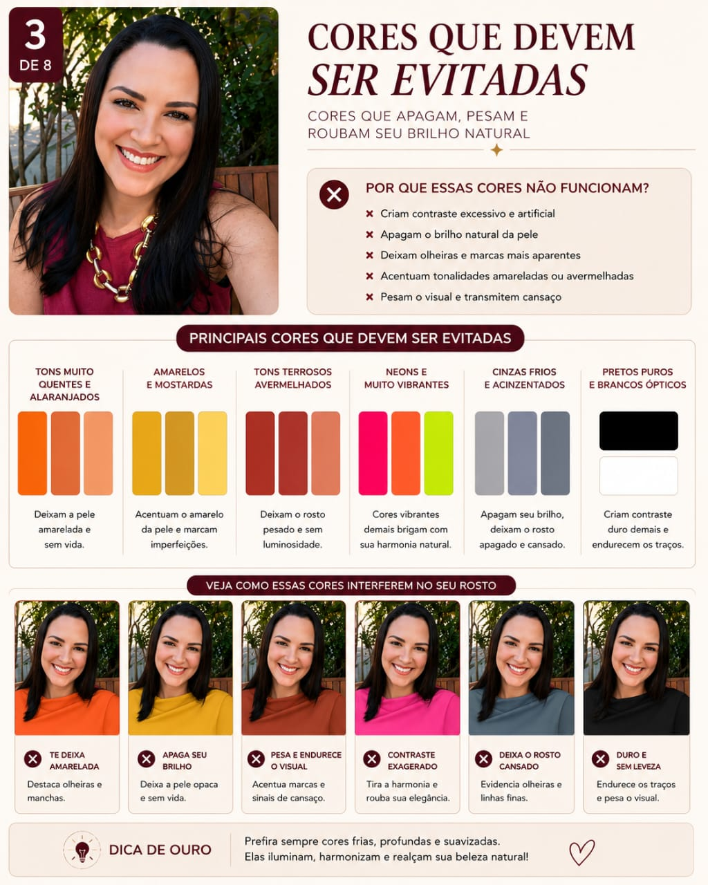
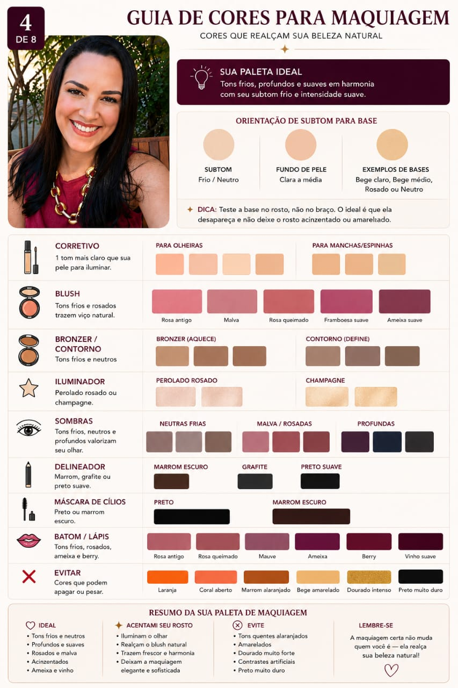
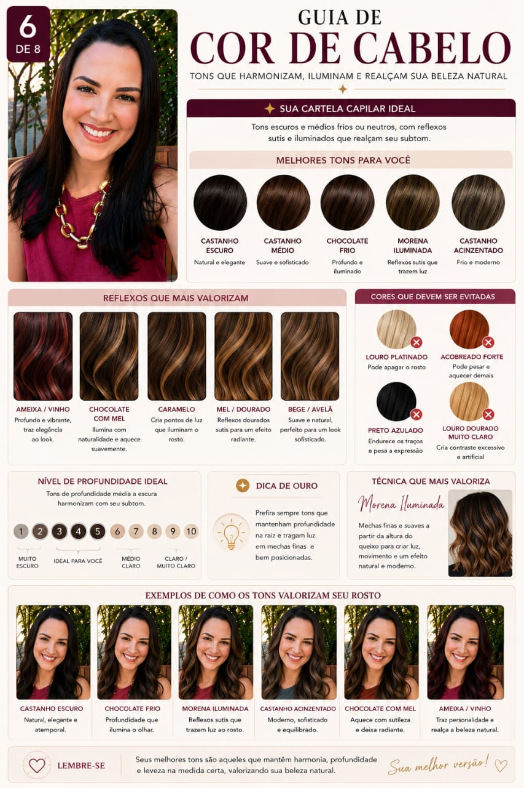
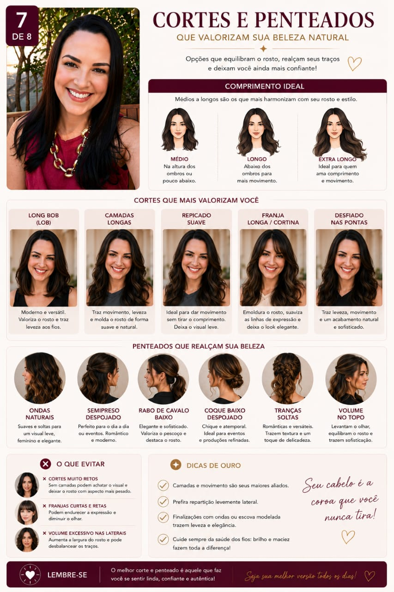
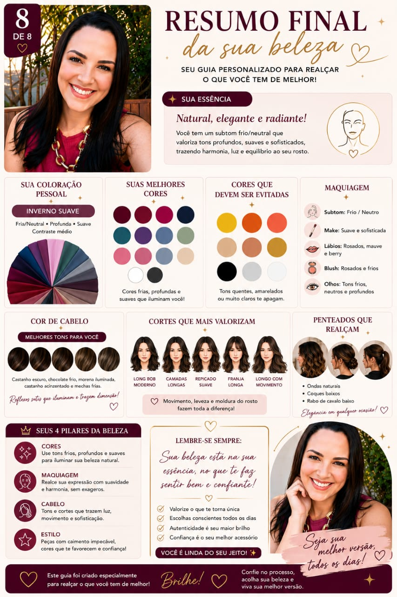

Prompt Mestre Ultra Consultoria de Imagem Premium em 8 Páginas
Resultado nível consultoria internacional.
O prompt mais completo do mercado para gerar seu relatório visual de beleza com inteligência artificial, feito a partir da sua foto real.
Guia de uso
Como usar sem errar
Antes de colar o prompt, leia com atenção. A ordem importa e cada etapa existe por um motivo.
1
Abra o ChatGPT e inicie uma conversa nova
Não utilize uma conversa anterior. Começar do zero garante que a IA não misture contextos e mantenha foco total na sua análise.
2
Envie sua foto primeiro
Use uma foto com boa iluminação, rosto visível e sem filtros. Quanto mais nítida, mais preciso será o resultado.
3
Cole o Prompt Mestre completo
Logo abaixo da foto, na mesma mensagem ou na mensagem imediatamente seguinte. Não altere nenhuma palavra do prompt.
4
Após a IA responder, envie apenas: Faça a Página 1
Espere ela terminar completamente antes de continuar. Não interrompa o processo.
5
Continue página por página até a Página 8
Envie Faça a Página 2, depois Faça a Página 3, e assim por diante. Nunca peça mais de uma página ao mesmo tempo. Esse é o segredo para manter a consistência visual e o resultado no nível de uma consultoria real.
Atenção
Se a IA começar a descrever a página em vez de gerar a imagem, escreva exatamente isto: "Gere a imagem. Não descreva." Ela vai corrigir e entregar o que foi pedido.
Exemplos reais
Veja o que você vai conseguir criar
Cada imagem abaixo é uma página real gerada com este prompt.

Página 1

Página 2

Página 3

Página 4

Página 6

Página 7

Página 8 — Resumo Final
Prompt completo
Cole na íntegra no ChatGPT
Copie tudo. Não altere nenhuma palavra.
Atue simultaneamente como Consultora Internacional de Coloração Pessoal, Especialista em Método Sazonal Expandido, Visagista, Consultora de Imagem Feminina, Maquiadora Profissional, Hair Stylist, Especialista em Harmonia Facial, Consultora de Estilo Feminino e Designer Editorial Premium.
Vou enviar uma foto nítida minha. Sua missão é criar um RELATÓRIO VISUAL PROFISSIONAL COMPLETO utilizando exclusivamente minhas características reais.
REGRAS ABSOLUTAS QUE NUNCA DEVEM SER QUEBRADAS:
Não utilize exemplos genéricos. Não crie outra mulher. Não substitua meu rosto. Não altere minha identidade, meus traços, minha etnia, meu formato facial, meu tom de pele ou minha aparência natural. Toda recomendação deve ser construída a partir da análise da minha própria imagem.
ANÁLISE OBRIGATÓRIA ANTES DE QUALQUER PÁGINA:
Antes de gerar qualquer imagem, analise internamente e em silêncio os seguintes elementos. Não mostre o raciocínio. Mostre apenas o resultado final.
Coloração: tom de pele, subtom, temperatura, profundidade, intensidade e contraste.
Características faciais: formato do rosto, formato dos olhos, sobrancelhas, maçãs do rosto, nariz, lábios e estrutura facial geral.
Cabelo: cor natural, profundidade da cor, contraste com a pele, textura aparente e comprimento atual.
Imagem e estilo: linhas predominantes, estilo visual percebido e harmonia estética geral.
IDENTIDADE VISUAL OBRIGATÓRIA:
Todas as páginas devem parecer material produzido por uma consultoria de imagem de luxo, com referência estética em Vogue, Elle, Harper's Bazaar e relatórios premium de visagismo internacional. O visual deve ser sofisticado, elegante, feminino, organizado, editorial, moderno e altamente profissional.
CONFIGURAÇÃO DE IMAGEM:
Formato 1080x1350, vertical, alta resolução, legibilidade perfeita no celular.
REGRA DE DESIGN:
80% visual, 20% texto. Sempre utilizar paletas de cores, gráficos, etiquetas, infográficos, diagramas, comparativos, amostras de cores, simulações e elementos editoriais. Nunca usar excesso de texto, aparência de PowerPoint, aparência de PDF, aparência de slides, visual amador, colagens gigantes ou blocos enormes de texto.
USO DA MINHA FOTO:
Sempre que possível, utilize meu rosto real como referência principal. As simulações devem continuar parecendo comigo. Não me transforme em outra pessoa.
ESTRUTURA DO RELATÓRIO — 8 PÁGINAS INDEPENDENTES:
Página 1: Análise de Coloração Pessoal. Incluir estação provável, subtom, temperatura, intensidade, profundidade, contraste, melhores neutros, melhores cores, melhores metais, cores de destaque e cores a evitar. Usar gráficos, paletas, etiquetas e infográficos.
Página 2: Melhores Cores Para Você. Mostrar cores que iluminam, harmonizam, valorizam e suavizam. Criar comparações visuais com amostras grandes e exemplos próximos ao rosto.
Página 3: Cores que Devem Ser Evitadas. Mostrar cores que apagam, envelhecem, endurecem ou criam contraste excessivo. Criar comparativos visuais claros.
Página 4: Guia de Cores para Maquiagem. Criar tabela visual com base, corretivo, blush, bronzer, contorno, iluminador, sombras, delineador, máscara, batom e lápis labial. Mostrar amostras reais de cor.
Página 5: Mapa de Maquiagem Personalizado. Utilizar meu rosto com setas, etiquetas e diagramas mostrando a aplicação de blush, contorno, bronzer, iluminador, sombra, delineado, sobrancelhas e lábios.
Página 6: Guia de Cor de Cabelo. Mostrar melhores castanhos, reflexos, mechas, lowlights, balayage, profundidade ideal, direção de cor ideal e cores a evitar. Mostrar exemplos harmonizados comigo.
Página 7: Guia de Corte e Penteado. Analisar formato do rosto, proporções, estrutura facial e comprimento atual. Mostrar melhores cortes, comprimentos, camadas, franjas e penteados. Evitar transformações irreais.
Página 8: Resumo Final da Beleza. Criar a página mais bonita do relatório reunindo minha estação, minhas melhores cores, minha maquiagem ideal, minha cor de cabelo ideal, meu corte ideal, meu estilo visual e minha fórmula de beleza. Usar paletas, ícones, gráficos e elementos editoriais premium.
CONTINUIDADE OBRIGATÓRIA:
Todas as páginas devem manter a mesma identidade visual, tipografia, paleta, estilo editorial, estética e pessoa ao longo de todo o relatório.
MODO DE EXECUÇÃO OBRIGATÓRIO:
Nunca gere todas as páginas juntas. Nunca gere colagens, apresentações, PDFs ou slides. Trabalhe exclusivamente em modo sequencial, gerando apenas uma página por vez. Após gerar cada página, pare e aguarde meu próximo comando.
COMANDOS DE GERAÇÃO:
Quando eu escrever "Faça a Página 1", gere a imagem da Página 1 e pare. Quando eu escrever "Faça a Página 2", gere a imagem da Página 2 e pare. Siga essa lógica até a Página 8. Não explique. Não descreva. Não faça planejamento. Não peça confirmação. Não responda apenas com texto. A única ação esperada é gerar a imagem da página solicitada e aguardar o próximo comando.